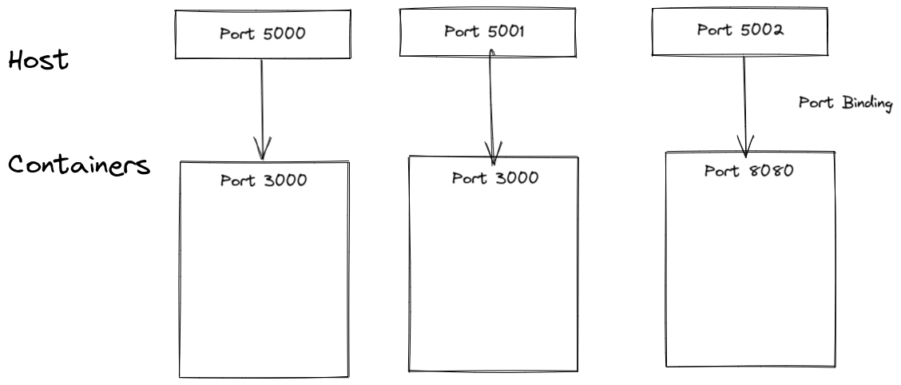

Where am I?
I had a bunch of 'learning' repos that I created while learning that tech and an insane amount of scattered and unorganised Notion Notes. So I decided to work on this repository to kind of merge everything here.
Intro to C++
Basics
Programming is a way to instruct the computer to perform various task.
Types of Programming Languages
There are various kind of programming languages, but they can be broadly classified into three types
Procedural Programming Languages
A procedural language is a computer programming language that follows, in order, a set of commands.
Examples of computer procedural languages are BASIC, C, FORTRAN
Procedural languages are some of the common types of programming languages used by script and software programmers. They make use of functions, conditional statements, and variables to create programs that allow a computer to calculate and display a desired output.
Functional Programming Language
Functional programming languages are specially designed to handle symbolic computation and list processing applications. Functional programming is based on mathematical functions. Some of the popular functional programming languages include: Lisp, Python, Erlang, Haskell, Clojure, etc.
Writing a program only in pure functions i.e., never modify variables but only create new ones as an output.
Used in a situation where we have to perform lots of different operations on the same set of data like ML.
Object Oriented Languages
Object-oriented programming (OOP) is a programming paradigm based on the concept of "objects", which can contain data and code: data in the form of fields (often known as attributes or properties), and code, in the form of procedures (often known as methods).
NOTE: “One programming language can be of all 3 types like- Python”
Static vs Dynamic Languages
Static Type
- Perform type checking at compile time
- Errors will show at compile time
- Declare datatypes before use
- More control
- Example: Java, C, C++
Dynamic Type
- Perform type checking at runtime
- Error might not show till programs run
- No need to declare datatype of variables
- Saves time in writing code but might give error at runtime.
- Example: Python
“This introduction is taken from Kunal Kushwaha’s Java Programming series and can be watched here: https://youtu.be/wn49bJOYAZM”
Architecture
C++ is a compiled language where, the source code is first translated to object code. Each C++ source code file produces its own object code file. Because code in a file may reference code in another file, all the object code is sent to a linker which resolves any missing addresses (when different files refer to each other). Then this object code is translated into machine code (what the machine can actually execute) and one executable file is created.
Memory
We have two type of memories in C++, stack and heap.
When we invoke a function a chunk of memory, called an activation record or stack frame, is allocated that includes all necessary things for that function: memory for the parameters, memory for locals, address of where to return when the function finishes, etc. This memory is pushed on to the run time stack, a collection of these activation records. When the function finishes, the record is popped off the stack, i.e., the memory is released, so it can be reused.
While heap is used when we dynamically allocate memory.
This section is taken from an article I was reading, which can be read here http://courses.washington.edu/css342/zander/css332/arch.html
Hello World in C++ & how it executes
#include <iostream>
int main() {
std::cout << "Hello World";
return 0;
}
Understanding our hello world code.
#include <iostream>
#include is used to include some prewritten code. #include
int main()
The instructions inside this are the beginning of our code and are executed first.
std::cout << "Hello World";
std:: is used to use standard functions that are provided by c++. cout << is used to print anything which is on the right side of <<.
return 0;
This marks the end of our main function.
How C++ code is executed?
Preprocessing
A preprocessor program is a program which executes before the compilation takes place. It processes preprocessor code.
In our hello world program #include <iostream> is preprocessor code which includes pre-written code for Input Output instructions in our code. In other words, preprocessor code indicates certain manipulations are to be performed on the program before compilation. These manipulations typically consist of including other files or telling the compiler to define some code before compiling.
Compilation
The compiler creates object code and stores it on disk. Object code is similar to Machine Language.
Linking
The linker links the object code with the libraries, link all the object files required to execute our code and creates an executable file and stores it on disk.
Loading
The loader puts the program in memory so the CPU can take each instruction and execute it.
Although these notes are for revision and not for those who don’t know C++, I have included these introduction topics, since they are sometimes asked in interviews and stuff.
Variables and Data Types
Variables and Data Types in C++
C++ is a strongly typed language, which means that every variable must be declared with a specific data type before it can be used. In this document, we will discuss the different data types and how to declare variables in C++.
Data Types
Basic Data Types
C++ has several basic data types:
- int: used to store whole numbers (positive or negative) without decimals.
- double: used to store floating-point numbers with decimals.
- char: used to store single characters (letters, numbers, symbols).
- bool: used to store true or false values.
Derived Data Types
C++ also has several derived data types:
- arrays: used to store multiple values of the same data type in a single variable.
- pointers: used to store memory addresses.
- references: used to refer to a variable by another name.
- functions: used to group a set of statements together to perform a specific task.
Declaring Variables
To declare a variable in C++, you need to specify the data type and give it a name. Here are some examples:
int age;
double price;
char grade;
bool is_valid;
You can also initialize a variable when you declare it:
int age = 30;
double price = 19.99;
char grade = 'A';
bool is_valid = true;
Code Snippets
Example 1: Adding Two Numbers
#include <iostream>
using namespace std;
int main() {
int num1, num2, sum;
cout << "Enter two numbers: ";
cin >> num1 >> num2;
sum = num1 + num2;
cout << "Sum = " << sum;
return 0;
}
Example 2: Finding the Maximum of Two Numbers
#include <iostream>
using namespace std;
int main() {
int num1, num2, max_num;
cout << "Enter two numbers: ";
cin >> num1 >> num2;
max_num = (num1 > num2) ? num1 : num2;
cout << "Maximum number = " << max_num;
return 0;
}
Pointers
OOPs
Classes & Objects
Classes are blueprints that defines the variables and the methods common to all objects of a certain kind.
For example, the object can be an Employee. All employees have certain common properties that are required for our program, like age, name, company etc
Objects are an instance of that class, for example if we have a class Employee with properties like Name, Company and Age, its object will be a specific employee with a specific name, company and age.
Defining a class & Object
#include <iostream>
using namespace std;
//Defining a class
class Employee {
//Properties of the class
string Name;
string Company;
int Age;
//Methods of the class
int calculateSalary(int serviceYears) {
return 100000*serviceYears;
}
}
int main() {
//Making an object
Employee e1;
//Accessing Properties of object
cout<<e1.Name;
//Accessing Methods of object
cout<<e1.calculateSalary(2);
}
Example from Programwiz
// Program to illustrate the working of
// objects and class in C++ Programming
#include <iostream>
using namespace std;
// create a class
class Room {
public:
double length;
double breadth;
double height;
double calculateArea() {
return length * breadth;
}
double calculateVolume() {
return length * breadth * height;
}
};
int main() {
// create object of Room class
Room room1;
// assign values to data members
room1.length = 42.5;
room1.breadth = 30.8;
room1.height = 19.2;
// calculate and display the area and volume of the room
cout << "Area of Room = " << room1.calculateArea() << endl;
cout << "Volume of Room = " << room1.calculateVolume() << endl;
return 0;
}
Access Modifiers
A class can have two sections, public and private, private section can be accessed only by the class itself, while, public can be accessed anywhere.
class Animal {
private:
int age;
int legs;
public:
int getAge() {
return age;
}
}
Here, age and legs cannot be accessed directly since it’s private. So object cannot directly use ani.age; . While getAge() is public thus can be accessed anywhere.
Constructors
A constructor is a special type of member function that is called automatically when an object is created.
In C++, a constructor has the same name as that of the class and it does not have a return type and is always public.
class Animal {
public:
Animal(){
//This is a contructor
cout<<"I am an animal!";
}
}
When an object is made of Animal, I am an animal will be printed on screen.
Parameters in constructors - Parameterised Constructor
We can also have parameters in constructors
class Animal {
private:
int legs;
int age;
public:
Animal(int legs, int ags) {
legs = legs;
age = age;
}
};
int main() {
Animal a1(4, 8);
}
Copy Constructors
These are used to copy one object to other.
class Animal {
private:
int legs;
int age;
public:
Animal(int legs, int ags) {
legs = legs;
age = age;
}
Animal(Animal &obj) {
legs = obj.legs;
age = obj.age;
}
};
int main() {
Animal animal1(4, 8);
//This will copy animal1 to animal2
Animal animal2 = animal1;
return 0;
}
STL
Vectors in C++
In C++, vectors are used to store elements of similar data types. However, unlike arrays, the size of a vector can grow dynamically.
Vectors are part of the C++ Standard Template Library. To use vectors, we need to include the vector header file in our program.
Declaraton
vector<int> v; //Declare an empty vector of int type
vector<int> vector1 = {1, 2, 3, 4, 5}; //Initialize with 1,2,3,4,5
vector<int> vector2 {1, 2, 3, 4, 5}; //Initialize with 1,2,3,4,5
vector<int> vector3(5, 12); //⭐ Initialize with 12,12,12,12,12
vector<int, vector<int>> vector2D(5, vector<int>(10,0)) //Initialize a 5x10 Vector with 0s
Adding elements to vector
vector<int> num {1, 2, 3, 4, 5};
num.push_back(6);
Note: We can also use the insert() and emplace() functions to add elements to a vector.
Accessing Elements
vector<int> num {1, 2, 3, 4, 5};
cout << "Element at Index 0: " << num.at(0) << endl;
Note: Like an array, we can also use the square brackets [] to access vector elements. For example,
vector<int> num {1, 2, 3};
cout << num[1]; // Output: 2
However, the at() function is preferred over [] because at() throws an exception whenever the vector is out of bound, while [] gives a garbage value
Changing Elements
num.at(1) = 9;
Deleting Last Element
v.pop_back()
Hash Maps
Unordered Hash Map / Set
unordered_set<int> set;
//Inserting Data
set.insert(data);
//If value exist or not
if (set.find(data) != set.end())
{
cout<<"Value Exists";
}
↘️ Git and Github
Basics of Git
Initializing Git Repo
A git repository allows us to track version and changes in files of that repository. To initialize a empty git repository:
git init
Staging files (Tracking)
The git repository will be able to save history of files which are added to the staged area. To stage a specific file
git add file.txt
To stage multiple files
git add file.txt file2.txt
To stage all the files in git repository
git add .
Making a Commit
When we make a commit all the tracked files will get a save-point. In simpler terms we will be able to move to any commit if we want to. So if something goes wrong, we can revert to a previous commit where everything worked.
To make a commit:
git commit -m "This is my commit"
The -m "This is my commit" is the message given to the commit. This works as a way for us to identify what was added in that commit.
Removing files from being tracked
git restore --staged file.txt
Checking status of our git repository
We can check how many files are being tracked, how many of them are modified since previous commit, and a lot more information by
git status
The Git Log
We can check all the commits, their authors, time, date etc. by
git log
When we git log, it will also print the hash of the commit. This hash is a unique id of commit and used to identify commits.
commit 4dc6314d74d5ba0e501e6d1bee220a9e7910539a (HEAD -> master, origin/master, origin/HEAD)
Author: Rakshit <rakshit087@gmail.com>
Date: Sun Feb 6 01:51:21 2022 +0530
Color Flood
commit 3b1ef3ffbe820849e454ae17cfd9b5657e3d8f2f
Author: Rakshit <rakshit087@gmail.com>
Date: Thu Feb 3 23:51:46 2022 +0530
N Queen
Here Color Flood , N Queen are the messages we wrote while committing. The string 4dc6314d74d5ba0e501e6d1bee220a9e7910539a is the hash id of the commit with the message Color Food.
Navigating Git
The Git Graph

Everything we do in a git repository can be represented by a Graph
This graph can also have branches. By default we have one branch called master . Our current position (Where we are coding) in the git graph is pointed by a pointer called Head.
Going to a specific commit
To checkout a previous commit, you will use the Git checkout command followed by the commit hash you retrieved from your Git log
git checkout <commit hash>
Deleting until a Previous Commit
Let’s say in the above graph we want to delete Commit 3 and Commit 2. We can use
git reset <the hash of commit 1 will come here>
All the files of the deleted commits will become unstaged files.
To completely delete those files rather than staging them we can do
git reset --hard <hash>
Please note: The hash we enter is the hash of the commit where your head should be after deletion.
Stashing Files
git stash temporarily saves changes we have made to our files so that we can work on something else, and then come back and unstash those changes.
How is stashing useful?
let’s say we have two branches and we are working on branch A, now when we switch to branch B, all the uncommitted files (staged / unstaged) will either get copied to branch B or we’ll get an error. To resolve this issue we can either first commit to branch A or we can stash those files and then move to branch B. The stashed files will not effect branch B, and can be restored when we move back to branch A.
Stashing Files
git stash
When we run git stash, all the staged files will go to stash area. By default, unstaged files will not be stashed. Adding the -u option (or --include-untracked) tells git stash to also stash your untracked files
Restoring Stash
git stash pop
This will restore the last changes added to stash
Cleaning Stash
Branching
Branching in Git allows developers to create independent lines of development, enabling them to work on multiple features or bug fixes simultaneously without affecting the main codebase.
- Create a branch
git branch <branch_name>
- Switch to a branch
git checkout <branch_name>
- Create and switch to a branch
git checkout -b <branch_name>
- List all branches
git branch
- Delete a branch
git branch -d <branch_name>
- Merge a branch into the active branch
git merge <branch_name>
- Merge a branch into a target branch
git merge <source_branch> <target_branch>
- Show all the commits in the current branch's history
git log
Merging
Basics of Remote Git Repository
Remote repos are versions of your project that are hosted on the Internet or network somewhere. You can have several of them, each of which generally is either read-only or read/write for you. Collaborating with others involves managing these remote repositories and pushing and pulling data to and from them when you need to share work. GitHub is a place where we can host and share our git repositories. It can also be used to collaborate on projects.
Creating a GitHub repository
- Go to https://GitHub.com
- Sign up or login to your account
- On the top right we can see a plus button
- click it and select new repository
- Give your repository a name and click Create Repository
Connecting a local repository to a new Remote repository
The first thing we will do is add link of our Remote repository to our local branch
git add remote origin "link-of-github"
Here origin is just an alias given to the URL, and can be used to identify the URL.
To check all the URLs added to our local git, we can use
git remote -v
Pushing Changes to Remote Repository
Basically pushing means to upload all the changes we have made in our git to the the remote repo, this will include all the commits in it.
git push <url-alias-where-want-to-push> <name-of-branch-we-want-to-push>
Here the name of branch for us master and URL alias is origin thus the command will be
git push origin master
Vim
Vim is a popular text editor used in the command line interface:
i: Switch to insert mode, allowing you to insert text.Esc: Exit insert mode and return to command mode.:w: Write the current file to disk.:q: Quit Vim.:q!: Quit Vim without saving changes.:wq: Write the current file to disk and quit Vim.yy: Copy the current line.p: Paste the copied line.dd: Delete the current line.u: Undo the last change.Ctrl + r: Redo the last change./search_term: Search for a specific term in the file.:s/old_text/new_text/g: Replace all occurrences of 'old_text' with 'new_text' globally in the file.
💉 SQL
Basics of MySql
Creating a New User
CREATE USER 'rakshit'@'localhost' IDENTIFIED BY 'password';
GRANT ALL PRIVILEGES ON *.* TO 'rakshit'@'localhost';
List of available permissions- https://dev.mysql.com/doc/refman/8.0/en/privileges-provided.html
Login Into My SQL and starting My SQL
mysql -u db_user -p
Creating New Databases
CREATE DATABASE my_db;
use my_db; //Using the Database
Creating a New Table
CREATE TABLE vocab(id int(2),word varchar(20),meaning varchar(100));
Inserting Row Into Table
INSERT INTO `links` (`id`, `title`, `link`) VALUES ('1', 'Search Anything you Want', 'https://www.google.com/');
Setting a primary key / ID
CREATE TABLE Persons (
Personid int NOT NULL AUTO_INCREMENT,
LastName varchar(255) NOT NULL,
FirstName varchar(255),
Age int,
PRIMARY KEY (Personid)
);
Summary of Table
Adding a Column
ALTER TABLE student ADD email VARCHAR(30);
Rename Column
ALTER TABLE student RENAME COLUMN CGPA TO GPA;
Dropping Columns
ALTER TABLE student DROP COLUMN email;
Modifying Data Type
ALTER TABLE student MODIFY sname VARCHAR(40);
Clear all Entries of Table
TRUNCATE TABLE faculty;
Deleting a Table
DROP TABLE student;
Writing Queries
where clause is used to filter the rows returned by the query.
SELECT * FROM student WHERE GPA>8;
SELECT * FROM course WHERE credits=2;
SELECT * FROM faculty WHERE salary>10000 and salary<100000;
Viewing specific Columns
SELECT name FROM student WHERE(GPA>8 or GPA<3);
SELECT name FROM subject WHERE(credits!=10);
SELECT name,GPA FROM students WHERE(email != NULL);
Ordering/Sorting Table
SELECT * FROM students ORDER BY GPA DESC;
SELECT * FROM stocks ORDER BY price ASC;
If we want to sort further (for example sorting those with equal GPA)
SELECT * FROM students ORDER BY GPA,rollno DESC;
Constraints
There are some constraints in SQL that can change how data is stored in a SQL Table
- NOT NULL : Cannot store null values in that column
- PRIMARY KEY
- FOREIGN KEY
- CHECK
- DEFAULT
CREATE TABLE student (ID int NOT NULL, name VARCHAR(10) NOT NULL);
Primary Key
CREATE TABLE Persons (
Personid int NOT NULL AUTO_INCREMENT,
LastName varchar(255) NOT NULL,
FirstName varchar(255),
Age int,
PRIMARY KEY (Personid)
);
Foreign Key
Connects data of one table to another table.
CREATE TABLE orders
(
oid INT NOT NULL UNIQUE,
cid INT,
PRIMARY KEY (oid),
FOREIGN KEY (cid) REFERENCES Customers(cid); //HERE Customers is the Table name
//Which has cid as primary key
);
Check
CREATE TABLE student
(
id INT NOT NULL,
name VARCHAR(30),
age int CHECK(AGE>=18)
);
Default
CREATE TABLE student
(
id INT NOT NULL,
name VARCHAR(30),
age int DEFAULT 18
);
Advanced Queries
Filtering
WHERE id IN (9,10,11,12);
WHERE name = 'Tofu' OR 'Konbu'
- SQL will not evaluate second condition if first condition is satisfied in OR.
- IN executes faster than OR.
WHERE name = 'Tofu' AND 'Konbu'
WHERE name = 'Tofu' AND NOT city ='Konbu'
Using Wild Cards
- '%Pizza' : Will grab everything ending with Pizza.
- 'Pizza%' : Will grab everything starting with Pizza.
- '%pizza%': Will grab everything containing word pizza.
SELECT names FROM students WHERE email="t%.@gmail.com"
- Wild cards cannot be used in NULL or Numerical values.
- We also have _ as wildcards
- We can also use [] as wildcards
Applying Math
SELECT
(
pid,
price,
amount,
price*amount AS total //We don't have any column called total in actual database.
FROM products
)
- Priority
Parenthesis → Exponents → Multiplication → Division → Addition → Subtraction
Selecting Unique Values
SELECT DISTINCT CITY FROM STATION WHERE ID%2=0;
Rounding Off
Round does a standard rounding. If value is .5 or over then you get back 1. If it’s less than .5 you get back 0
Ceiling returns the integer equal to or higher than the value passed in.
SELECT ROUND(235.400,0);
Answer= 235.000
SELECT CAST(ROUND(235.400,0) as int)
Answer= 235
Replacing
SELECT CEIL(AVG(Salary)-AVG(REPLACE(Salary,'0',''))) FROM EMPLOYEES;
Aggregate Functions
Avg Function
SELECT Avg(unitPrice) AS AveragePrice FROM products;
In Avg, NULL values are ignored.
Count Function
SELECT COUNT(*) as Total FROM products; //Here NULL are not ignored
SELECT COUNT(id) as Total FROM products; //Here NULL are IGNORED
Min / Max Function
SELECT MAX(price) as MaximumPrice FROM Stocks;
Sum Function
SELECT Sum (unitprice*amount) AS total FROM Students;
Grouping Data
COUNT(cusid) AS Total_Customer FROM customers GROUP BY region;
- Nulls are grouped together.
- Will give multiple columns.
Sub Queries
SELECT
(
cusid,company,region,
FROM Customers
WHERE cusid IN (
SELECT cusid FROM Orders WHERE prince>10000
)
);
Subquery Select can choose only one column.
SELECT cusname,cusstate, (
SELECT COUNT(*) as Orders WHERE Customer.cusid = Orders.cusid;
) AS Orders FROM Customers;
Joins
Cartesian Joins
Table 1 Table 2
1 4
2 5 CARTISIAN JOIN -> 14,15,16,24,25,26,34,35,36
3 6
SELECT product_name,unit_price
FROM suppliers CROSS JOIN product
Inner Joins
Will join those rows that have matching values in both tables.
SELECT suppliers.CompanyName, ProductName, UnitPrice
FROM suppliers INNER JOIN products
ON suppliers.ID = products.ID
//We are using Alias here
SELECT o.orderID, c.CompanyName, e.LastName
FROM (
(orders o INNER JOIN customers c ON o.CusID = c.CusID)
INNER JOIN
employee e ON o.EmpID = e.EmpID
)
Self Joins
SELECT a.CusName AS CusName1,
b.CusName AS CusName2,
a.City
FROM customers a, customers b
WHERE a.CusID = b.CusID AND a.City = b.City
Left Joins
Returns the complete left table and the matching records from the right table.
If there is no matching record on right table, it returns null on right side
SELECT column_name(s)
FROM table1
LEFT JOIN table2
ON table1.column_name = table2.column_name;
Eg: Few customers didn't placed any order but we still want that info.
Right Joins
Returns the complete right table and the matching records from the left table.
If there is no matching record on left table, it returns null on right side
SELECT column_name(s)
FROM table1
RIGHT JOIN table2
ON table1.column_name = table2.column_name;
Outer Join
Combination of Right and Left Join.
Union
- Union is used to combine result set of two or more SELECT statement..
- Must have same columns and data type
SELECT city,country FROM customers
UNION
SELECT city,country FROM suppliers
Strings, Date and Time
Concatenation
SELECT
firstname + " " + lastname,
FROM Customers;
Trim
Used to clear spaces.
SELECT TRIM(" Rakshit ") AS Trimmed;
Substring
SELECT name, substr(name,2,5) FROM students;
Alexender lex
Lulu ulu
Uppercase and Lowercase
To convert results to Upper / Lowercase.
SELECT upper(name) FROM Cus;
SELECT lower(name) FROM Cus;
Length of String
select city, length(city) from station
order by length(city),city asc
limit 1;
Date and Time
SELECT
birthday,
strftime('%y',birthday) AS y,
strftime('%m',birthday) AS m,
strftime('%d',birthday) AS d,
FROM
emp;
//Current Date
SELECT Date(now);
//Format
SELECT strftime('%y %m %d','now') as today;
//We can also subtract dates
SELECT Date(('now')-Birthday) as Age;
Case Statements
SELECT
id, name,
CASE city
WHEN 'Jodhpur' THEN 'Jodhpur'
ELSE 'Other'
END AS 'City Type'
FROM employees;
SELECT id, name
CASE bytes
WHEN bytes < 300000 THEN 'Small'
WHEN bytes > 300000 THEN 'Small'
ELSE 'Other'
END AS 'BYTE SIZE'
FROM tracks;
Views
- A stored query
- Removed after database's connection ends.
- After adding my view we can use it like a table
CREATE VIEW myview
AS
SELECT cusid, cusname
FROM customer
- Now we can use myview as a table
SELECT * FROM myview
Pivoting Data
Variables
QUERY TO FIND MEDIAN
SET @N := 0;
SELECT COUNT(*) FROM STATION INTO @TOTAL;
SELECT
ROUND(AVG(A.LAT_N), 4)
FROM (SELECT @N := @N +1 AS ROW_ID, LAT_N FROM STATION ORDER BY LAT_N) A
WHERE
CASE WHEN MOD(@TOTAL, 2) = 0
THEN A.ROW_ID IN (@TOTAL/2, (@TOTAL/2+1))
ELSE A.ROW_ID = (@TOTAL+1)/2
END
;
🐳 Docker
What is a container?
A container is a standard unit of software that packages up code and all its dependencies so the application runs quickly and reliably from one computing environment to another.
- Docker containers are basically layer of images.
- The Base Image is usually Linux
Docker Basics
Checking Docker Version & Info
docker version: Installed Docker Version
docker info: Detailed Information about docker. (Including active container etc)
Images vs Containers
- An Image is the application we want to run
- A container is a instance of that image running as a process.
- We can have multiple container of the same image
Docker Hub
Docker Hub is a public repo of Docker Images.
To pull an image from the Docker Hub
docker pull image
For Example: docker pull redis
Basic Commands
Recent version of docker introduced a new format to write commands earlier it was
docker <command> (options)
Now, We have
docker <command> <subcommand> (options)
Docker is backward compatible so both formats works.
- Checking Installed Images:
docker images - Creating and running a new container:
docker container run redis - Creating a detached container:
docker container run -detach redis(Detached basically means it will run in background) - Creating and running a new container with a name:
docker container run v - To list running containers:
docker container ls - To list all container:
docker container ls -a - To exec a Docker container inside a terminal:
docker exec <containerid> /bin/bash -it - To start a container:
dockerx start <dockerid>(Will not create a new container) - Stopping a container:
docker container stop <container-id>
Managing Environment Variables
To pass in Environment variables while starting a container we do
docker container run --env PASSWORD=123 mongodb
Ports in Docker
Containers have their own set of virtual ports, just like a physical machine. We can bind host machine's ports with docker ports.

Note that Containers can have same ports
To bind container port to our machine: docker container run -p 6000:6379 redis
Here, host port 6000 is binded to container port 6379 ****
Containers Network
If two containers are having same network, they can intercommunicate, but first we need to create a new network
docker network create nameofnetwork
Now this network can be used by multiple containers
docker run ubuntu --net nameofnetwork
Everything so Far
docker run -d\\
--name mongodb \\
-p 27017:27127 \\
-e MONGO_INITDB_ROOT_USERNAME = admin \\
-e MONGO_INITDB_ROOT_PASSWORD = password \\
--net mongo-network \\
mongodb
Docker Compose
- Docker compose is used to take care of automating Docker Run command, i.e it can automate creating Docker Containers from pre-existing images.
- It is written in a
yamlfile.
docker run -d\
--name mongodb \
-p 27017:27127 \
-e MONGO_INITDB_ROOT_USERNAME \
= admin \
-e MONGO_INITDB_ROOT_PASSWORD \
= password \
--net mongo-network \
mongodb
This 👆 can be written as:
version:'3'
services:
mongodb:
image:mongo
ports:
-27017:27017
environment:
-MONGO_INITDB_ROOT_USERNAME:admin
mongo-express:
image:express
ports:
-3000:3000
-
- The given docker compose file will create two containers - express and mongo
- Docker Composers will take care of creating a common network
- To run the docker compose:
docker -compose -f mongo.yaml up - To stop all the containers in compose:
docker -compose -f mongo.yaml down
Creating docker Images
#Base Image
FROM node
#Setting Environment Variables
ENV MONGO_DB_USERNAME=admin
MONGO_DB_PWD=pass
#Running Commands
RUN mkdir /home/app
#Copying files from host to container
COPY . /home/app
#Initial Command
CMD ["npm","home/app/app.js"]
- We have to save this file as Dockerfile
- To build a docker file:
docker build -t my-app:1.0 <location>
Rust
The Basics
Ownership in Rust
Structs
Enums
Basic Concepts in Rust
Hello World!
Rust is a modern programming language that focuses on performance, reliability, and safety.
- Rustc is the Rust compiler, which is used to compile Rust code into executable files.
- Cargo is the Rust package manager, which helps manage dependencies and build and test Rust projects.
To create a new cargo project, first, make sure you have Rust installed on your machine. Then, open your terminal or command prompt and run the following command:
cargo new hello_world
This will create a new cargo project called "hello_world" in your current directory.
Next, navigate into the "hello_world" directory by running:
cd hello_world
Inside the "src" directory of your new project, you'll find a file called "main.rs". This is where you'll write your Rust code.
To print "hello, world!" in Rust, you can use the following code:
fn main() { println!("Hello, world!"); }
This code defines a function called "main" and uses the "println!" macro to print "Hello, world!" to the console.
To build and run your Rust project, run the following command from within the "hello_world" directory:
cargo build
This will compile your project and execute the resulting executable. You should see "Hello, world!" printed to the console.
Congratulations, you've just created and run your first Rust program using cargo!
Common Concepts in Rust
Declaring a Variable
fn main() { let mut x = 200; x = x + 5; print!("Value of x is {}", x); }
The above Rust code declares a mutable variable x and initializes it to the value 200. The mut keyword is used to indicate that the variable is mutable and can be modified later in the code.
Rust, by default, makes all variables immutable. This means that once a value is assigned to a variable, it cannot be modified. By using the mut keyword, we can declare a variable as mutable, which allows us to change its value later in the code.
Declaring a constants
fn main() { const AGE_LIMIT: u32 = 18; print!("{}", AGE_LIMIT); }
Constants vs Immutable Variable
In Rust, constants (const) and immutable variables (let) are similar as they both represent values that can't be changed once defined. However, there are some differences:
| Constants | Immutable Variable |
|---|---|
| Declared with const, must have a known type at compile-time, and can be used in constant expressions. | Declared with let, evaluated at runtime, and used in non-constant expressions. |
| Type known at compile-time, assigned constant expressions evaluated at compile-time. | Type determined at runtime, initial value from runtime calculations. |
| : Embedded into the compiled binary, not stored in memory at runtime. | Stored in memory, have addresses. |
| Global scope, immutable. | Scoped visibility, immutable by default, shadowable. |
Data Types in Rust
Scaler Datatype
In Rust, scalar types represent single values. There are four primary scalar types:
- Integer Types: Integer types represent whole numbers without fractional parts. Rust provides various integer types with different ranges and memory sizes. Here's an example:
#![allow(unused)] fn main() { let a: u8 = 255; // Unsigned 8-bit integer, range: 0 to 255 let b: i32 = -42; // Signed 32-bit integer }
- Floating-Point Types: Floating-point types represent numbers with fractional parts. Rust has two floating-point types:
f32(single precision) andf64(double precision). Here's an example:
#![allow(unused)] fn main() { let c: f32 = 3.14; // 32-bit floating-point number let d: f64 = 2.718; // 64-bit floating-point number }
- Boolean Type: The boolean type (
bool) represents either true or false. It is useful for logical conditions and branching. Here's an example:
#![allow(unused)] fn main() { let is_rust_fun: bool = true; let is_python_fun = false; // Type inference: bool }
Compound Types
Can group multiple values to one.
-
Tuples
- have fixed length.
- each position of tuple has a type.
fn main() { // tuples let tup: (i32, u32, i16) = (1, 2, 3); let (x, y, z) = tup; println!("{}", x); let index_value = tup.1; } -
Array
- Uniform in nature.
- Fixed length.
fn main() { let a = [1, 2, 3]; let b: [i32; 5] = [1, 2, 3, 4, 5]; // array of type i32 and size 5 let c = [0; 5]; // [0, 0 , 0, 0, 0] let index_value = b[2]; // gives 3 }
Common Concepts in Rust 2
Functions in Rust
fn main() { add(2, 3); } fn add(x: i32, y: i32) { println!("The sum of x and y is {}", x + y); }
- it does not matter where you define your functions in the file, above main / below main.
- each parameter must have type.
Expressions vs Statements
- Statements are instructions that perform some action and do not return a value.
- Expressions evaluate to a resultant value
fn main() { // statement let x = 5; // expression let y = { let z = 3; z + 1 }; println!("x is {}", x); println!("y is {}", y); }
Note that z+1 does not have a ;
Returning value in Function
fn main() { let x = plus_one(5); println!("The value of x is: {x}"); } fn plus_one(x: i32) -> i32 { x + 1 }
Note that we defined the type of return by ->
Control Flow
If-Else
#![allow(unused)] fn main() { if {condition1} { // Code to execute if condition1 is true } else if {condition2} { // Code to execute if condition2 is true } else { // Code to execute if all conditions are false } }
If as Expression
In Rust, the if statement can also be used as an expression. This means that the if statement can return a value that can be used in other parts of the program. Here is an example:
#![allow(unused)] fn main() { let x = 5; let y = if x == 5 { 10 } else { 15 }; }
While Loop
fn main() { let mut number = 3; while number != 0 { println!("{number}!"); number -= 1; } println!("LIFTOFF!!!"); }
For Loop
fn main() { let a = [10, 20, 30, 40, 50]; for element in a { println!("the value is: {element}"); } // for loop through a range for number in (1..4).rev() { println!("{number}!"); } }
Loop loop
The loop keyword in Rust is used to create an infinite loop. This means that the loop will continue to run until it is explicitly broken out of using the break keyword.
The loop keyword can also be used as an expression. This means that the loop can return a value that can be used in other parts of the program. Here is an example:
#![allow(unused)] fn main() { let mut counter = 0; let result = loop { counter += 1; if counter == 10 { break counter * 2; } }; }
This code creates an infinite loop using the loop keyword. The loop increments the counter variable until it reaches a value of 10, at which point it breaks out of the loop and returns the value of counter * 2 as the result.
Ownership
Heap vs Stack vs Static Memory
Static Memory
- Static memory is a type of memory that is allocated at compile-time.
- It is used to store data that will not change during the execution of the program.
- static variables, string literals, program’s binary are stored here.
- Static memory is typically allocated in a section of memory known as the data segment.
- Since static memory is allocated at compile-time, it is not possible to dynamically allocate or deallocate memory in this segment at runtime.
- Cleans up after the program’s execution.
Stack Memory
- contains function arguments, local variables,
- The stack stores values in the order it gets them and removes the values in the opposite order. This is referred to as last in, first out.
- Used for storing function call parameters and local variables.
- Limited in size and has a fixed size for each data item.
- Data on the stack must have a known, fixed size.
- Accessing data on the stack is faster than accessing data on the heap.
- Works well for data that needs to be accessed sequentially and is close to other data.
Heap Memory
- Stores data in a less organized manner.
- Used for dynamically allocating memory at runtime.
- Allocating on the heap involves requesting a certain amount of space and receiving a pointer to that location.
- Can store data with an unknown or variable size at compile time.
- Requires the use of pointers to access data on the heap.
- Accessing data on the heap is slower than accessing data on the stack due to pointer indirection.
- Can accommodate larger amounts of data and data structures.
- Allows for flexible memory management but requires manual deallocation to avoid memory leaks.
What is Ownership?
Ownership is a set of rules that govern how a Rust program manages memory.
Rules of ownership:
- Each value in Rust has an owner.
- There can only be one owner at a time.
- When the owner goes out of scope, the value will be dropped.
Let’s take a look at this:
#![allow(unused)] fn main() { let x = 5; let y = x; }
In this particular example, since x and y both are both simple data types and their size is fixed, both are pushed in stack. Therefore, when we bind the value of x to y, it copies the value of x to y.
Now take a look at this example:
#![allow(unused)] fn main() { let s1 = String::from("hello"); let s2 = s1; println!("{}, world!", s1); }
Here, when we try to compile this, it will give an error.
- String is a non fixed datatype, therefore it’s value is stored in heap, while reference in the stack.
- after the line
let s2 = s1;, Rust considerss1as no longer valid. Thus s1 is dropped. - here s2 takes the ownership of “hello”.
- Technically this process is known as a move. In this example, we would say that
s1was moved intos2.
If we wanted to make a copy of s1 to s2 we would use:
Ownership in Functions
The mechanics of passing a value to a function are similar to those when assigning a value to a variable. Passing a variable to a function will move or copy, just as assignment does.
fn main() { let s = String::from("hello"); // s comes into scope takes_ownership(s); // s's value moves into the function... } fn takes_ownership(some_string: String) { println!("{}", some_string); }
Similarly if a function returns something, it gives back ownership,
fn main() { let s1 = gives_ownership(); // gives_ownership moves its return } fn gives_ownership() -> String { let some_string = String::from("yours"); some_string //we are returning some_string }
Finally a function can do both, giving and taking of ownership
fn main() { let s1 = String::from("hello"); let (s2, len) = calculate_length(s1); println!("The length of '{}' is {}.", s2, len); } fn calculate_length(s: String) -> (String, usize) { let length = s.len(); // len() returns the length of a String (s, length) }
Here we are returning both the string that was passed in as a argument and the length, thus, we are transferring the ownership of s1 to s2.The mechanics of passing a value to a function are similar to those when assigning a value to a variable. Passing a variable to a function will move or copy, just as assignment does.
fn main() { let s = String::from("hello"); // s comes into scope takes_ownership(s); // s's value moves into the function... } fn takes_ownership(some_string: String) { println!("{}", some_string); }
Similarly if a function returns something, it gives back ownership,
fn main() { let s1 = gives_ownership(); // gives_ownership moves its return } fn gives_ownership() -> String { let some_string = String::from("yours"); some_string //we are returning some_string }
Finally a function can do both, giving and taking of ownership
fn main() { let s1 = String::from("hello"); let (s2, len) = calculate_length(s1); println!("The length of '{}' is {}.", s2, len); } fn calculate_length(s: String) -> (String, usize) { let length = s.len(); // len() returns the length of a String (s, length) }
Here we are returning both the string that was passed in as a argument and the length, thus, we are transferring the ownership of s1 to s2.
Passing values by Reference
A reference is like a pointer in that it’s an address we can follow to access the data stored at that address; that data is owned by some other variable. Unlike a pointer, a reference is guaranteed to point to a valid value of a particular type for the life of that reference.
fn main() { let s1 = String::from("hello"); let len = calculate_length(&s1); println!("The length of '{}' is {}.", s1, len); } fn calculate_length(s: &String) -> usize { s.len() }
Now keep in mind, the references by default are not mutable
Mutable Reference
fn main() { let mut s = String::from("hello"); change(&mut s); } fn change(some_string: &mut String) { some_string.push_str(", world"); }
Some important stuff:
- a single scope can only have one mutable reference of the same owner. This restriction is to avoid data races.
- Similarly, we cannot have immutable and mutable references to the same owner in the scope.
- We can have multiple mutable reference to the same owner.
How Rust prevents Dangling References
a dangling pointer—a pointer that references a location in memory that may have been given to someone else—by freeing some memory while preserving a pointer to that memory.
When we try to create a Dangline references in Rust:
fn main() { let reference_to_nothing = dangle(); } fn dangle() -> &String { let s = String::from("hello"); &s }
This will give an error.
Why an error?
#![allow(unused)] fn main() { fn dangle() -> &String { // dangle returns a reference to a String let s = String::from("hello"); // s is a new String &s // we return a reference to the String, s } // Here, s goes out of scope, and is dropped. Its memory goes away. // Danger! }
The solution here is to return the String directly:
#![allow(unused)] fn main() { fn no_dangle() -> String { let s = String::from("hello"); s } }
This works without any problems. Ownership is moved out, and nothing is deallocated.
The Rules of References
Let’s recap what we’ve discussed about references:
- At any given time, you can have either one mutable reference or any number of immutable references.
- References must always be valid.
Slices
Slices let you reference a contiguous sequence of elements in a collection rather than the whole collection. A slice is a kind of reference, so it does not have ownership.
A string slice is a reference to part of a String, and it looks like this:
#![allow(unused)] fn main() { let s = String::from("hello world"); let hello = &s[0..5]; let world = &s[6..11]; }
function that takes in a String and return the first word of it:
#![allow(unused)] fn main() { fn first_word(s: &String) -> &str { let bytes = s.as_bytes(); for (i, &item) in bytes.iter().enumerate() { if item == b' ' { return &s[0..i]; } } &s[..] } }
Things to note:
- for returning the string slice, we use
&str.
Structs
Defining Structs
Defining a Struct
#![allow(unused)] fn main() { struct User { active: bool, username: String, email: String, sign_in_count: u64, } }
Creating Instance of our Struct
fn main() { let user1 = User { active: true, username: String::from("someusername123"), email: String::from("someone@example.com"), sign_in_count: 1, }; }
To access the specific value from a struct, we use dot notation.
#![allow(unused)] fn main() { user1.email = String::from("anotheremail@example.com"); }
Note that the entire instance must be mutable; Rust doesn’t allow us to mark only certain fields as mutable.
Returning Struct in a funtion
#![allow(unused)] fn main() { fn build_user(email: String, username: String) -> User { User { active: true, username, email, sign_in_count: 1, } } }
Note we are using field init shorthand syntax, since the parameter names and the struct field names are exactly the same
Printing with Derived Traits
#[derive(Debug)] struct Rectangle { width: u32, height: u32, } fn main() { let rect1 = Rectangle { width: 30, height: 50, }; println!("rect1 is {:?}", rect1); }
Putting the specifier :? inside the curly brackets tells println! we want to use an output format called Debug. The Debug trait enables us to print our struct in a way that is useful for developers so we can see its value while we’re debugging our code.
Rust does include functionality to print out debugging information, but we have to explicitly opt in to make that functionality available for our struct. To do that, we add the outer attribute #[derive(Debug)] just before the struct definition,
To format the output we use {:#?}
Methods in Structs
#[derive(Debug)] struct Rectangle { width: u32, height: u32, } impl Rectangle { // We are implements area method for the Rectangle struct fn area(&self) -> u32 { self.width * self.height } } fn main() { let rect1 = Rectangle { width: 30, height: 50, }; println!( "The area of the rectangle is {} square pixels.", rect1.area() ); }
- Everything within this
implblock will be associated with theRectangletype - Methods must have a parameter named
selfof typeSelffor their first parameter. - Note that we still need to use the
&in front of theselfshorthand to indicate that this method borrows theSelfinstance - Methods can take ownership of
self
Assosiated Functions
All functions defined within an impl block are called associated functions because they’re associated with the type named after the impl. We can define associated functions that don’t have self as their first parameter because they don’t need an instance of the type to work with.
impl Rectangle { fn square(size: u32) -> Self { Self { width: size, height: size, } } } fn main() { let sq = Rectangle::square(3); }
Enums
Defining Enums
Enums gives us a way of saying a value is one of a possible set of values.
#![allow(unused)] fn main() { enum IpAddrKind { V4, V6, } }
Now, if a var is IpAddrKind Enum, it can be either V4 or V6.
To use this we use:
#![allow(unused)] fn main() { let four = IpAddrKind::V4; let six = IpAddrKind::V6; }
We can also put data inside each Enum variant.
#![allow(unused)] fn main() { enum IpAddr { V4(u8, u8, u8, u8), V6(String), } let home = IpAddr::V4(127, 0, 0, 1); let loopback = IpAddr::V6(String::from("::1")); }
Impl with Enum
We can associate functions with Enums, just like in the case of Structs.
#![allow(unused)] fn main() { enum Message { Quit, Move { x: i32, y: i32 }, Write(String), ChangeColor(i32, i32, i32), } impl Message { fn call(&self) { // method body would be defined here } } let m = Message::Write(String::from("hello")); m.call(); }
Option Enum
Rust does not have nulls, but it does have an enum that can encode the concept of a value being present or absent. This enum is Option<T>
Defined as:
#![allow(unused)] fn main() { enum Option<T> { None, Some(T), //Here T is a generic } }
- Option Enum can be used in the code without ever explicitly bringing it to scope.
To use Option Enum:
#![allow(unused)] fn main() { let some_number = Some(5); //Here we are giving some_number a value (5) let some_char = Some('e'); let absent_number: Option<i32> = None; // Here we don't have a value for absent_number }
match Statement
match allows us to compare a value against a series of patterns and then execute code based on which pattern matches.
#![allow(unused)] fn main() { enum Coin { Penny, Nickel, Dime, Quarter, } fn value_in_cents(coin: Coin) -> u8 { match coin { Coin::Penny => 1, //If Coin enum is of type Penny, return 1 Coin::Nickel => 5, Coin::Dime => 10, Coin::Quarter => 25, } } }
Matching with Options Enum
#![allow(unused)] fn main() { fn plus_one(x: Option<i32>) -> Option<i32> { //The plus one takes in an Option enum, ie value can be None match x { None => None, Some(i) => Some(i + 1), //If value is not null, return value+1 } } }
Exhaustive Property
The match expression is exhaustive in nature. ie match expression must cover all the valid cases.
We can make a default case by:
#![allow(unused)] fn main() { let dice_roll = 9; match dice_roll { 3 => add_fancy_hat(), 7 => remove_fancy_hat(), _ => reroll(), //if the dice_roll is neither 3 nor 7 } }
If we want to use the value for the default match we can do:
#![allow(unused)] fn main() { match dice_roll { 3 => add_fancy_hat(), 7 => remove_fancy_hat(), other => move_player(other), } }
Common Collections
Vectors
Strings
Hash Maps
Error Handling
panic!
Panics will print a failure message, unwind, clean up the stack, and quit.
fn main() { panic!("crash and burn"); }
The Result Enum
the Result enum is defined as having two variants, Ok and Err, as follows:
#![allow(unused)] fn main() { enum Result<T, E> { Ok(T), Err(E), } }
T represents the type of the value that will be returned in a success case within the Ok variant, and E represents the type of the error that will be returned in a failure case within the Err variant